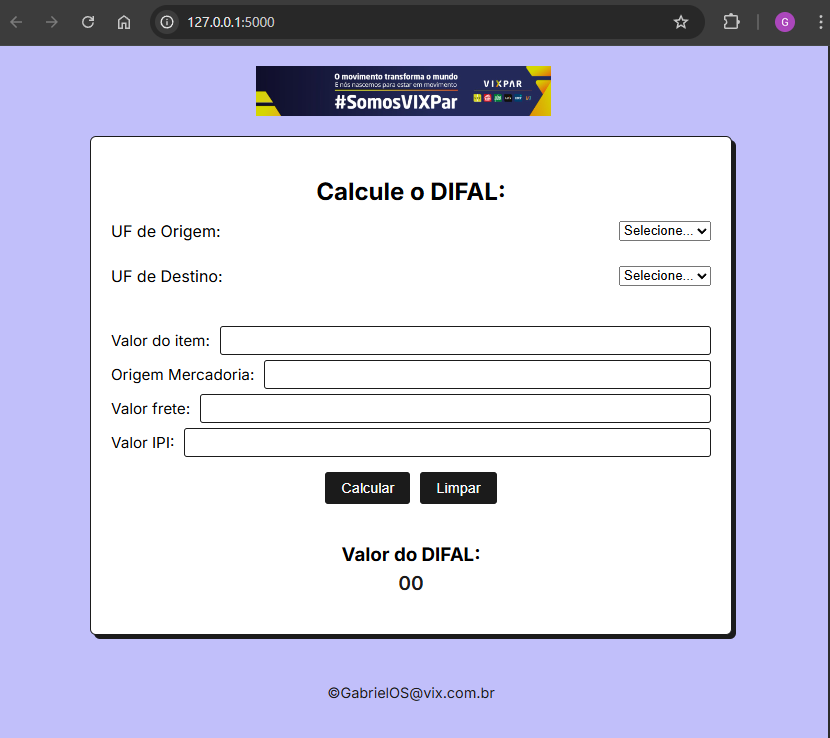

📌 Sobre o Projeto
Este projeto consiste em uma calculadora de DIFAL (Diferencial de Alíquota de ICMS), desenvolvida para auxiliar empresas a realizarem esse cálculo de forma precisa e ágil, evitando falhas comuns em planilhas de Excel ou sistemas mal parametrizados.
🚀 Objetivo do Projeto
- Automatizar o cálculo do DIFAL com base nas legislações vigentes.
- Substituir planilhas manuais e suscetíveis a erros.
- Agilizar o trabalho dos colaboradores responsáveis pela escrituração fiscal.
🧠 Tecnologias Utilizadas
- Python, Flask API, HTML5, CSS3 e JavaScript para o desenvolvimento do mini site.
- Regras de negócio fiscais parametrizadas no sistema.
🔍 Funcionalidades
- Cálculo automático do DIFAL para diferentes operações.
- Interface amigável para usuários não técnicos.
- Maior precisão em relação às planilhas manuais.
📊 Resultados / Benefícios
- Eliminação de erros em cálculos manuais.
- Maior confiabilidade nos registros fiscais.
- Agilidade no processo de implantação de notas fiscais.
📸 Captura do Projeto
Aqui você pode adicionar uma imagem ou screenshot da Calculadora DIFAL em funcionamento:
🔗 Link do Projeto no GitHub
Você pode acessar o código-fonte do projeto clicando no link abaixo:
Acessar Calculadora DIFAL no GitHub👨💻 Autor
Projeto desenvolvido por Gabriel de Oliveira Silva, estudante de Tecnologia da Informação com experiência em automação fiscal, contabilidade e sistemas ERP (SAP).